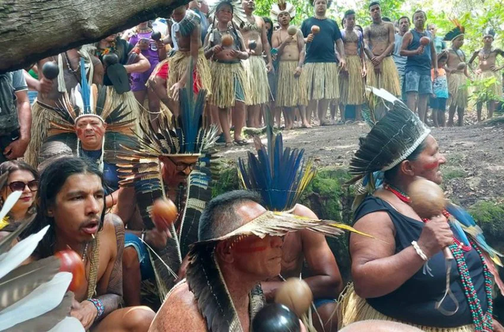
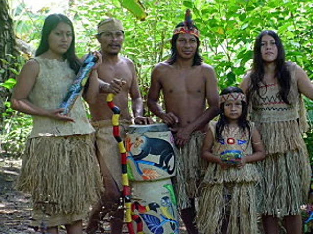

Vida Social de los Chorotegas en Honduras
Organización Social Chorotega
La civilización chorotega, asentada principalmente en el sur de Honduras, destacó por una compleja y jerarquizada organización social. Su estructura comunitaria estaba bien definida, lo que les permitió mantener el orden interno, desarrollar una economía estable y conservar sus tradiciones.
La sociedad chorotega se organizaba de la siguiente manera:
- Cacique: Era la máxima autoridad política y religiosa. Gobernaba varias aldeas o comunidades, organizaba ceremonias religiosas y tomaba decisiones importantes.
- Consejo de Ancianos: Grupo de hombres sabios con experiencia que asesoraban al cacique en decisiones políticas, sociales y religiosas.
- Guerreros: Se encargaban de la defensa del territorio. Tenían un gran prestigio dentro de la sociedad por su valentía.
- Campesinos: Constituían la mayoría de la población. Se dedicaban al cultivo del maíz, frijol, cacao y otros productos básicos.
- Artesanos: Especialistas en cerámica, tejido y escultura. Sus productos eran valorados y también servían como medio de intercambio comercial.
- Niños y mujeres: Las mujeres tenían roles importantes en la vida cotidiana, incluyendo la elaboración de cerámica y la educación de los hijos. Los niños eran educados desde pequeños en las tradiciones del pueblo.


Relaciones sociales y culturales
- La familia era el núcleo principal. Vivían en chozas comunales de barro y palma.
- La cooperación comunitaria era esencial: trabajaban juntos en la agricultura, construcción y festividades.
- El matrimonio era generalmente monógamo y pactado entre familias como alianza social.
- Tenían fuertes vínculos religiosos. Se rendía culto a dioses relacionados con la tierra, el maíz y los astros.
- La música, la danza y las ceremonias formaban parte activa de su vida social.
Las fiestas religiosas reforzaban la identidad comunitaria y eran momentos clave para fortalecer los lazos sociales. Se realizaban ofrendas, danzas rituales, sacrificios simbólicos y juegos tradicionales.